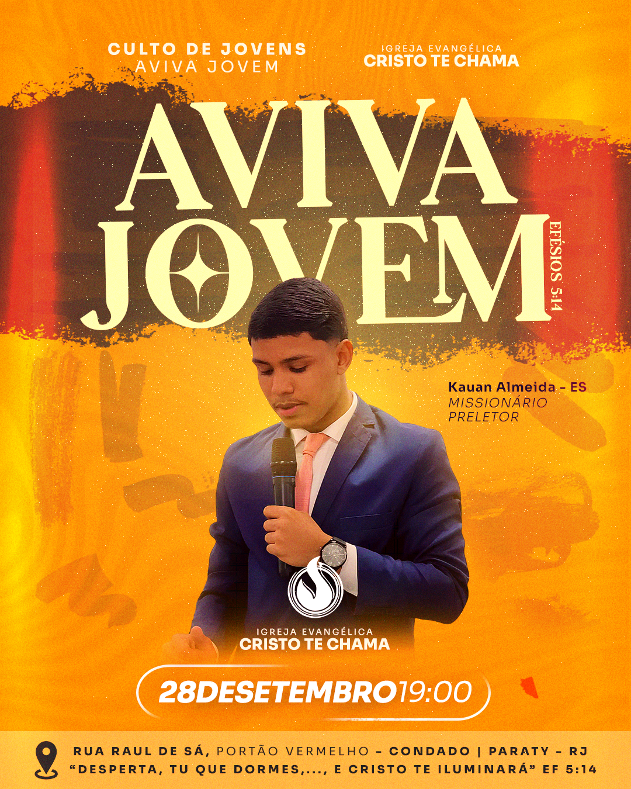
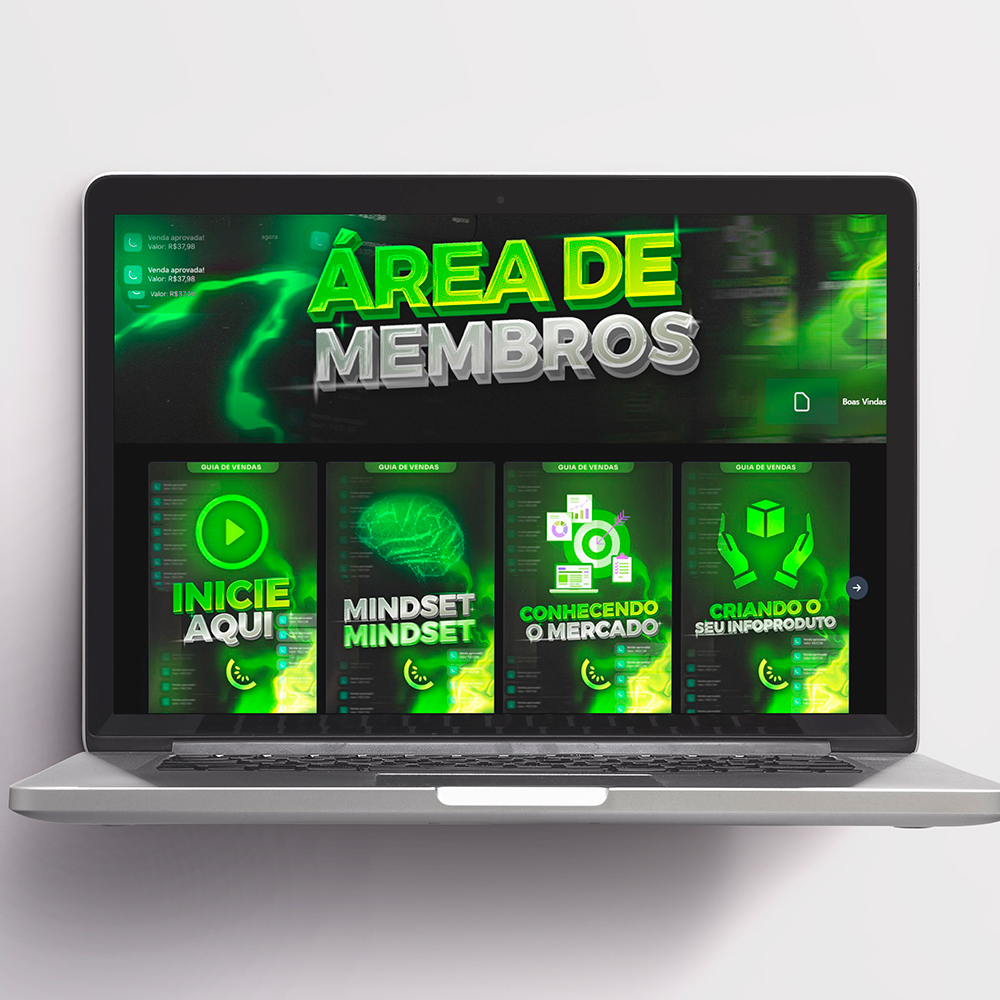
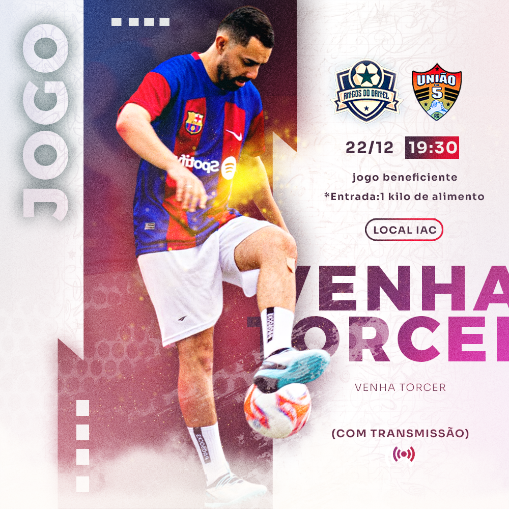

Taylan Silva
Estudante de Análise e Desenvolvimento de Sistemas
Possuo 18 anos, sou apaixonado por design visual e tecnologia.
Sempre em busca de novas ideias e projetos criativos, tenho uma
mente voltada para a inovação e desenvolvimento de soluções gráficas.
Com sólida experiência em ferramentas como Photoshop e Illustrator, já
demonstrei habilidades no desenvolvimento de projetos visuais. Além disso,
sou leitor, o que contribui para minha capacidade de explorar novas tendências
e refinar a minha visão estética.
Habilidades
Desde a infância eu sempre fui apaixonado por aspectos visuais. Acabei desenvolvendo
alguns conhecimentos em programas de edição de imagem, edição de vídeo e modelagem 3D como:
Adobe Photoshop, Adobe Illustrator, Cinema 4D e After Effects.
Tenho experiência com freelancer em Design Gráfico, onde desenvolvi projetos para marcas, streamers,
lojas e entre outros. Você pode verificar na sessão de projetos.
Projetos

- 
- 
- 
Faça download do meu currículo.
Faça download dos meus projetos.
{kind=link}
Instituto Infnet
Estudante de Análise e Desenvolvimento de Sistemas - Tecnólogo
Duração: 2 anos e 6 meses - 2.783 horas
Modalidade: Presencial (Matutino)
Status: Cursando - 1° Período